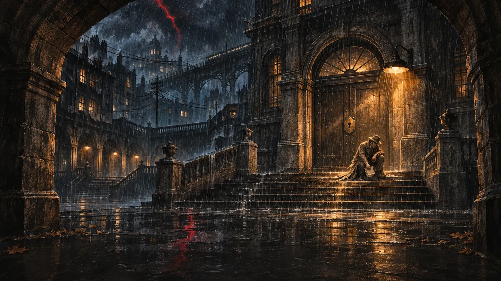

Dead Script: Final Revision
The Art Archive
The painted rooms, paper creatures and typewriter parts that bring Oakhaven to life.
Browse the collection
119 works
Browse the list of artworks
- The walk to the archive · Cinematic illustration
- Run-on Slasher · approach · Animation sheet
- The cyan press · Environment painting
- Elias’s office · Environment painting
- The Margin Moth · Animation sheet
- The Red Fissure · Environment painting
- The lower Wharf · Environment painting
- The Heavy-Handed Critic · arrival · Cinematic illustration
- Elias’s ink revolver · Painted asset
- Oakhaven after dark · Title illustration
- Sewing floor · Environment painting
- The Carbon Room · Environment painting
- Elias’s typing gloves · Painted asset
- The Bookbinder · arrival · Cinematic illustration
- Rain archive · Environment painting
- The archive threshold · Environment painting
- The wreck channel · Environment painting
- The Redactionist · approach · Animation sheet
- The Plagiarized Sovereign · Animation sheet
- A man in Elias’s coat · Cinematic illustration
- The carriage cutouts · Painted asset
- The clean proof sheet · Painted asset
- The game icon · Painted asset
- The typewriter bed · Painted asset
- The typewriter platen · Painted asset
- Elias Thorne study · Development study
- Elias walk study · Animation sheet
- Ink-stamped hand studies · Development study
- Typewriter desk study · Development study
- Run-on Slasher · claw strike · Animation sheet
- The Carbon-Smudge Remnant · Character illustration
- The Loose Leaf Swarm · Sprite sheet
- The Redactionist · fall · Animation sheet
- The Redactionist · jump · Animation sheet
- The Redactionist · landing · Animation sheet
- The Redactionist · nib slash · Animation sheet
- The Redactionist · redline dash · Animation sheet
- The Redactionist · resting pose · Animation sheet
- The Redactionist · taking a hit · Animation sheet
- The Redactionist · the censor wall · Animation sheet
- The Seal Keeper · Animation sheet
- The Redactionist · arrival · Cinematic illustration
- Revolver recoil · Animation sheet
- The Golden Ribbon · Painted asset
- The muzzle flash · Animation sheet
- The ribbon reload · Animation sheet
- A printed bridge plank · Environment painting
- Passage to the fissure · Environment painting
- The Cold Vault · Environment painting
- The Filing Aisle · Environment painting
- The Receiving Room · Environment painting
- The Redactionist’s press room · Environment painting
- The far bank · Environment painting
- Filing Aisle study · Development study
- First-person typewriter study · Development study
- Ink shot study · Development study
- Ribbon reload study · Development study
- Run-on Slasher study · Development study
- Slasher walk study · Animation sheet
- Drying-line Errata · Animation sheet
- The Deadline · Animation sheet
- The Heavy-Handed Critic · guard · Animation sheet
- The Heavy-Handed Critic · parry · Animation sheet
- The Heavy-Handed Critic · raising the shears · Animation sheet
- The Heavy-Handed Critic · strike · Animation sheet
- The Heavy-Handed Critic · taking a hit · Animation sheet
- The Folding Engine · Environment painting
- The Master Press · Environment painting
- The Typeface Foundry · Environment painting
- The dispatch hall · Environment painting
- The drying line · Environment painting
- The proofing floor · Environment painting
- The Forgery · Animation sheet
- The Wharf Annotator · Animation sheet
- The Plagiarized Sovereign · arrival · Cinematic illustration
- The ink ferry · Painted asset
- Customs office · Environment painting
- Salvage basin · Environment painting
- Signal lantern · Environment painting
- Bound Soul · lunge · Animation sheet
- Bound Soul · resting pose · Animation sheet
- Needle · dive · Animation sheet
- Needle · hovering · Animation sheet
- The Bookbinder · casting a stitch · Animation sheet
- The Bookbinder · cutting a stitch · Animation sheet
- The Bookbinder · resting pose · Animation sheet
- The Bookbinder · taking a hit · Animation sheet
- Ledger vault · Environment painting
- Parcel intake · Environment painting
- Sorting pit · Environment painting
- Spine workshop · Environment painting
- Thread dyehouse · Environment painting
- The Author · dive · Animation sheet
- The Author · reading · Animation sheet
- The Author · recoil · Animation sheet
- The Author · sweep · Animation sheet
- The Author · taking a hit · Animation sheet
- The Author · writing · Animation sheet
- The Tower scout · Animation sheet
- Dead letter lift · Environment painting
- Last margin · Environment painting
- The Author’s chamber · Environment painting


Show works with story spoilers
- The Redactionist · defeat · Animation sheet
- The Redactionist · unmasking · Animation sheet
- The Redactionist · aftermath · Cinematic illustration
- The Heavy-Handed Critic · defeat · Animation sheet
- The Heavy-Handed Critic · aftermath · Cinematic illustration
- The Plagiarized Sovereign · aftermath · Cinematic illustration
- Bound Soul · release · Animation sheet
- The Bookbinder · fall · Animation sheet
- The Bookbinder · aftermath · Cinematic illustration
- The Author · erasure · Animation sheet
- The Author · aftermath · Cinematic illustration
- The Author · arrival · Cinematic illustration
- The last receipt · Cinematic illustration
- The open door · Cinematic illustration
- Morning in Oakhaven · Environment painting
- The last impression · Environment painting
- The morning street · Environment painting


No works match these filters.